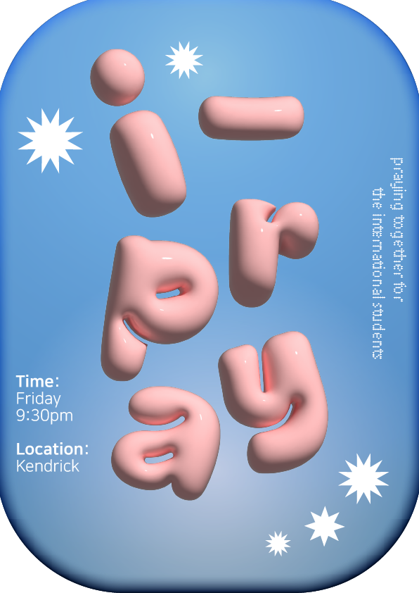

-
Wednesday Chapel
All Handong students gather at least weekly to corporately worship God. Although it is a Liberal compulsory course, ‘Chapel’ is conducted in an open-style service, comprising praise, devotional messages from the Bible, and student led small concerts and plays..
-
Sunday Service
The Sunday Worship Service at Handong is a cherished time when students, faculty, and community members come together to glorify God. Unlike the weekly Chapel, the Sunday service is not part of the curriculum but offers a deeper, more intimate spiritual experience. .
-
Thursday All-Out Worship
Thursday All-Out Worship is a dynamic and spiritually uplifting gathering where the Handong community unites for an evening of wholehearted worship. This service goes beyond the usual routine, featuring extended praise sessions, and powerful messages. -
Thanksgiving Service
Let us count our blessings and give our thanks for this semester and an year. We invite you to UMUL where we share the joy to worship our LORD!
-
i-Pray
Hello, everybody!✨We of iPray invite anyone to join us in a time of prayer for the international community that is in Handong🔥Join us in a time of lifting our prayers to God to know more about who He is and grow a closer relationship with the Lord. Anyone is welcome to join but, the entire prayer meeting will take place ‼️in English.‼️ -
Umul Worship
Invitation to the Monday U-mul Worship and Prayer Meeting💧 Who is worthy of all praise and worship? God is calling YOU to Umul. For more information, Han Wang 010-3226-7375